Bramblewood Icon Style Audit
98 icons grouped by category. Each row should read as internally consistent — outliers stand out. If all rows look uniform but distinct from each other, per-category srefs are the right fix. If outliers are scattered randomly within rows, a single moodboard sref is the fix.
Weapons 5
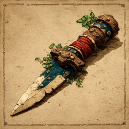
bogiron_dagger
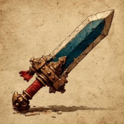
bogiron_sword
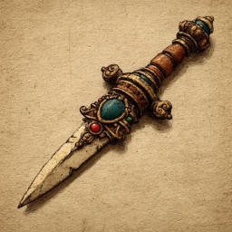
brindle_dagger
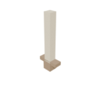
brindle_sword
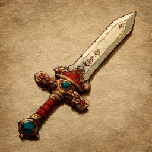
cinderbloom_sword
Armor 6
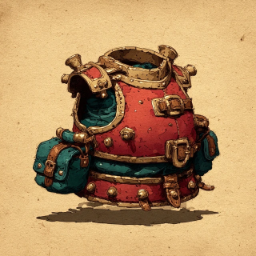
bogiron_cuirass
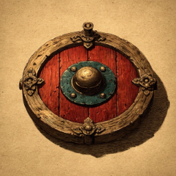
bogiron_shield
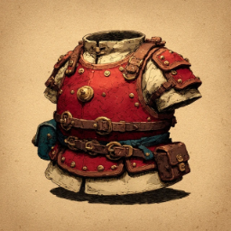
cinderbloom_plate
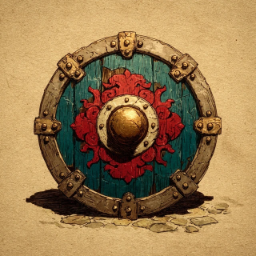
cinderbloom_shield
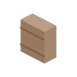
leather_body
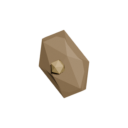
wooden_shield
Tools 9
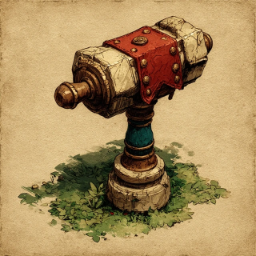
apprentices_hammer
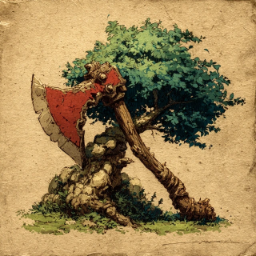
bogiron_axe
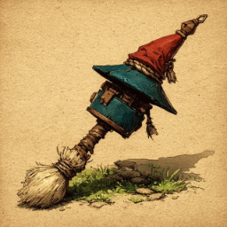
bogiron_pickaxe
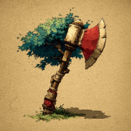
brindle_axe
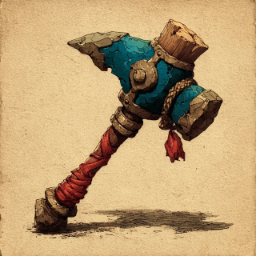
brindle_pickaxe
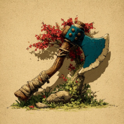
cinderbloom_axe
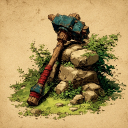
cinderbloom_pickaxe
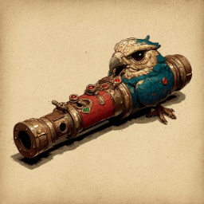
falcons_whistle
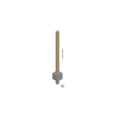
fishing_rod
Food 9
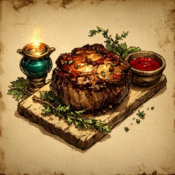
brindle_roast
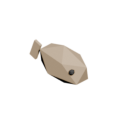
cooked_sardine
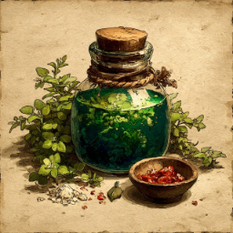
healing_draught
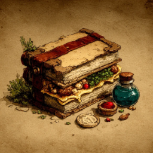
hedgewight_strip
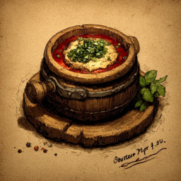
pantry_stew
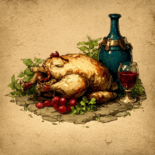
pippin_spit
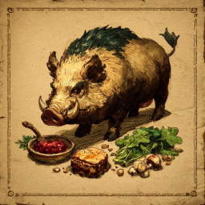
tusker_crackling
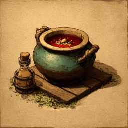
whicker_stew
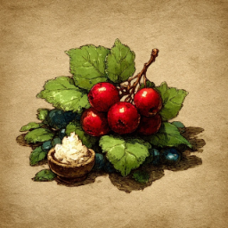
whitleberry
Runes 7
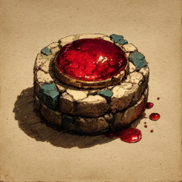
rune_blood
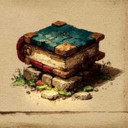
rune_body
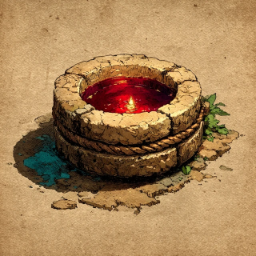
rune_death
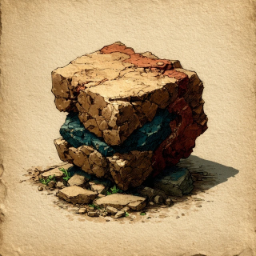
rune_law
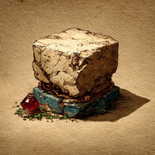
rune_mind
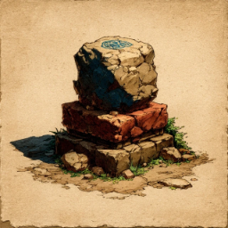
rune_stone
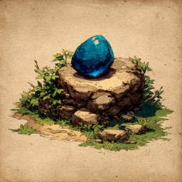
rune_water
Inks 7
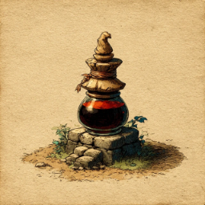
bramblepress_ink
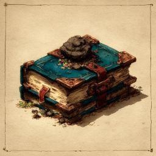
charcoal_bind
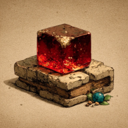
ember_ink
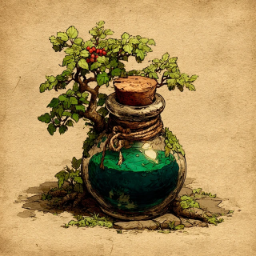
hedge_ink
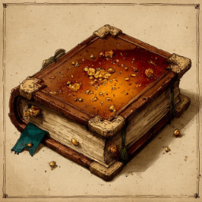
lustrous_ink
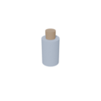
refined_ink
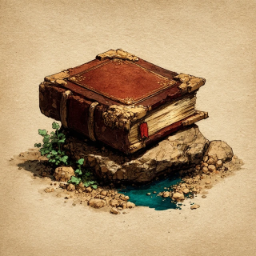
stoneground_ink
Charts 4
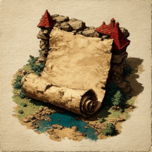
chart_blank
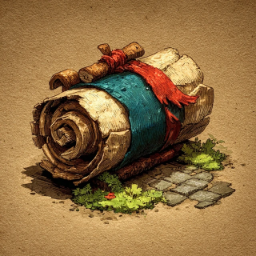
chart_delve
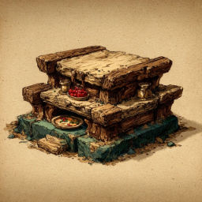
chart_hollow
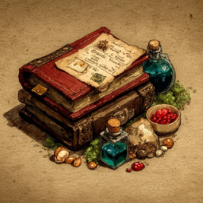
chart_snug
Lore 2
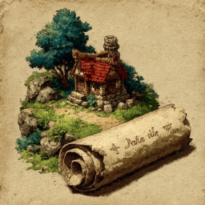
parchment_seventh_cottage
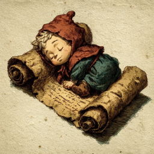
parchment_well_man
Ores & Bars 5
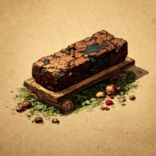
bogiron_bar
bogiron_ore
brindle_bar
cinderbloom_bar
palechalk_ore
Monster Drops 12
charred_pippin
charred_tusker
charred_whicker
raw_brindle
raw_hedgewight
raw_pippin
raw_sardine
raw_tusker
raw_whicker
tusker_tusk
whicker_pelt
whickerhares_foot
Skill Icons 8
skill_atk
skill_carto
skill_cook
skill_earth
skill_falconry
skill_magic
skill_str
skill_wilds
Sundries 24
bramble_resin
burnt_sardine
charcoal_stick
coalrose
coin
crow_feather
downfeather
field_journal
foxfire_glow
foxglove_sprig
hedgecap
hods_anvil_token
lantern_oil
logs
morning_dew
pond_water
rivermud
salt_chip
surveyors_pole
thorn_crown
thorn_essence
vellum
wild_herb
wishrose
Generated by scripts/research/build_icon_audit.mjs · 2026-05-05